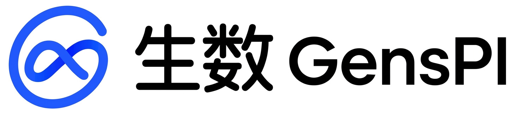
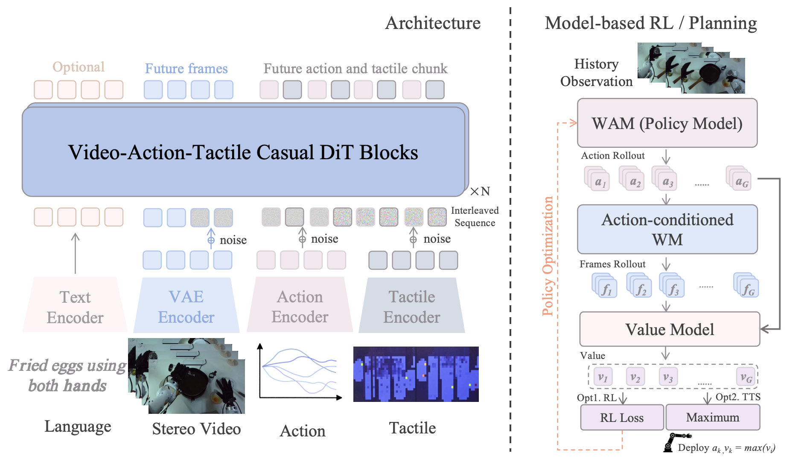
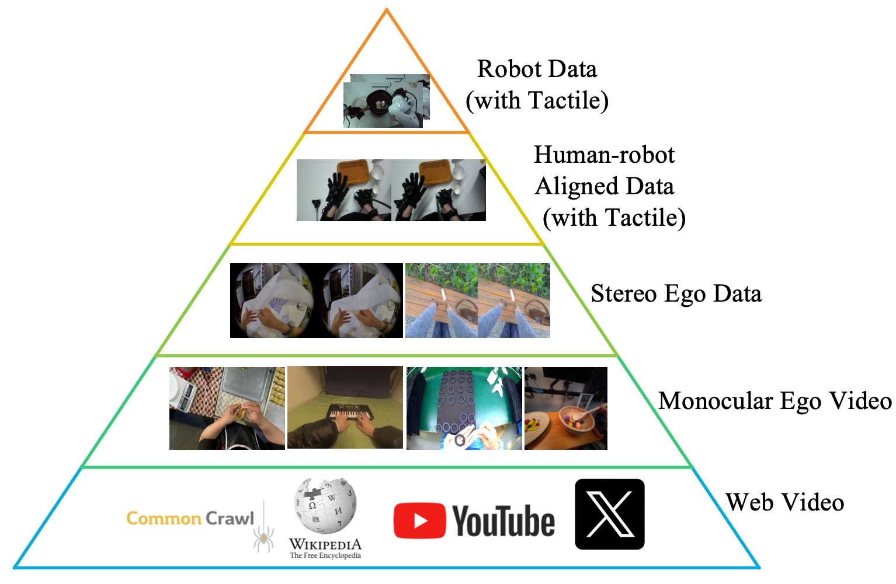
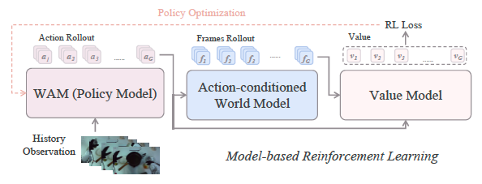
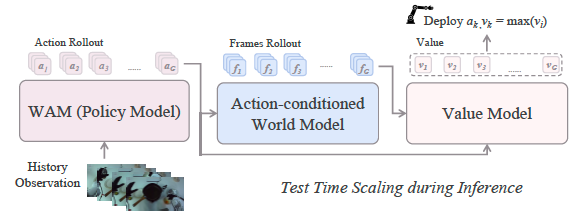
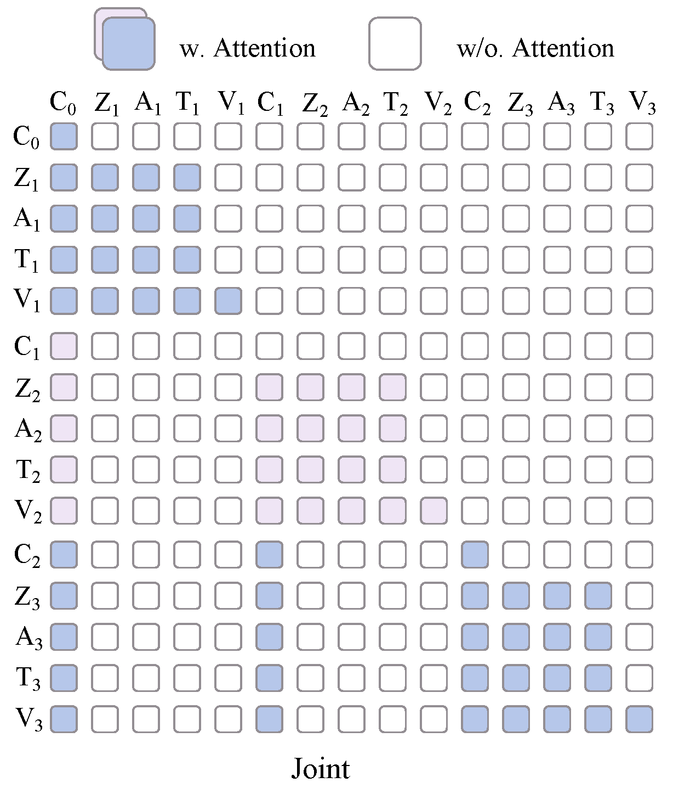
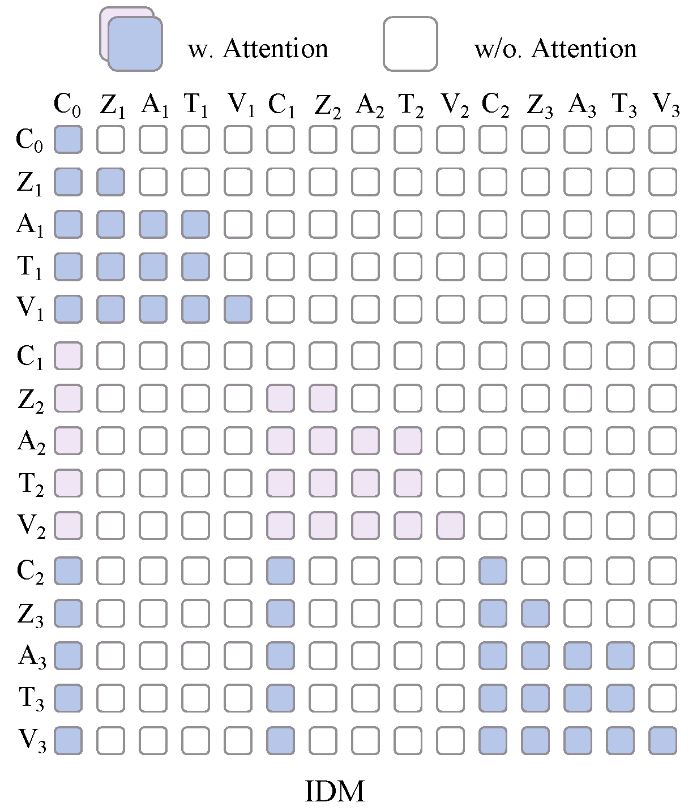
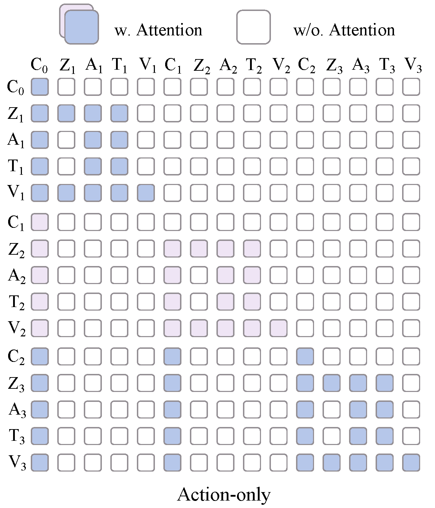
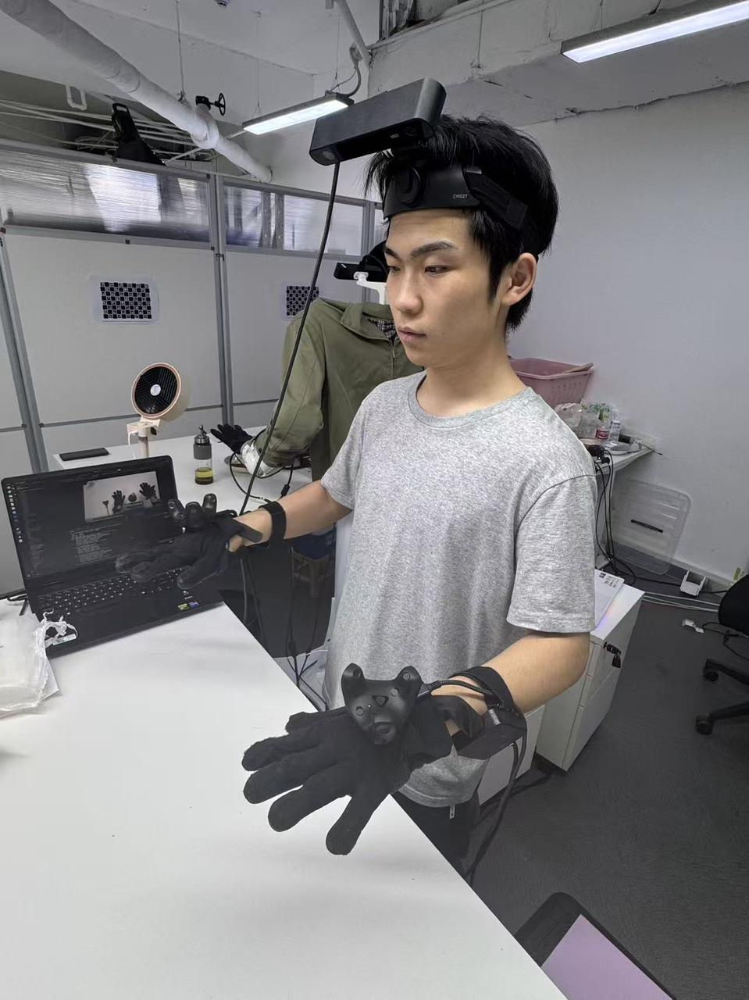

Motus2
One unified world model that renders egocentric video, simulates contact-rich dynamics, plans dexterous actions, and evaluates imagined rollouts — scaled on a human data pyramid and closed with model-based RL, on a fully bionic stereo dual-arm dual-hand platform with full-palm tactile sensing.
TL;DR
Overview
Embodied AI has long split the stack: models that render pixels, models that simulate state, and models that plan actions. The field’s clearest trend is their convergence — the knowledge to paint a world, predict what happens inside it, and choose how to move is largely the same. A model that truly understands a cup on a table should render it from any view, roll out contact when it is pushed, and plan how a hand grasps it. Those are three projections of one underlying world understanding; the logical endpoint is a unified world model.
Motus2 is that endpoint, with the loop closed. A single Joint Video-Action-Tactile DiT acts as renderer (future frames), simulator (action-conditioned world model), planner (world action model / policy), and evaluator (value model) — trained on a human data pyramid from web video to tactile robot trajectories, then self-evolved with model-based RL on real failure and suboptimal data.
On hardware, we demonstrate spray cleaner, screw bulb, cut banana, and multi-fruit grasp — contact-rich bimanual skills on a fully bionic stereo dual-arm dual-hand platform with full-palm tactile sensing.
Real-World Experiments
The unified model plans and controls contact-rich, long-horizon bimanual skills — evaluated on real hardware with stereo vision and full-palm tactile feedback.
Spray cleaner and wipe the tabletop.
Screw in a light bulb with dual hands.
Cut banana with a knife.
Grasp multiple fruits from the table.
Architecture
Multi-token in, multi-token out. Motus2 learns a joint distribution over language, stereo video, action, and tactile trajectories in one Joint Video-Action-Tactile DiT. Language, perception, dynamics, and control are not separate heads bolted together — they are interleaved tokens processed by shared causal DiT blocks, so the same weights that imagine pixels also roll out physics and score futures.
In deployment terms, the unified model is simultaneously a renderer (predicting future egocentric frames), a simulator (action-conditioned world model / AC-WM), a planner (world action model proposing action chunks), and an evaluator (value model over imagined trajectories). Training aligns these roles; inference runs them in a closed loop — imagine, simulate, plan, judge.
Long horizons are handled with Sliding Window AR: the model autoregressively extends video–action–tactile context in overlapping windows instead of a single-shot prediction. Streaming Inference keeps latent state warm across windows so each new chunk conditions on the previous rollout without cold-starting the full sequence — enabling real-time control on contact-rich tasks.

Scaling Path
A unified world model is only as good as the world it has seen. Motus2 scales along a five-tier human data pyramid — from internet-scale web video (breadth), through 110k+ hours of monocular and 20k hours of stereo egocentric video (egocentric physics and hand–object contact), to human-robot aligned tactile trajectories and target-robot demonstrations (the distribution we deploy on). Each tier teaches the same underlying object and contact knowledge the renderer, simulator, and planner must share.

Increasing human data consistently reduces validation loss. From 2k to 20k hours, models converge faster and reach lower asymptotic error — following a predictable logarithmic scaling law.
Self-Evolving
Pretraining gives Motus2 a shared world prior; self-evolution sharpens it on the robot. Motus2-mbrl runs model-based RL where the same unified backbone proposes actions, the action-conditioned world model imagines consequences, and the value model scores them — trained with Ray-based distributed async RL on failure rollouts, suboptimal teleop, and task-irrelevant exploration that static imitation would discard.

At deployment, the planner and simulator run inside the same weights: propose an action chunk, roll out future frames with the world model, re-infer actions (IDM + FDM / denoising), and let the evaluator pick high-value branches — test-time scaling over imagined trajectories rather than more parameters.

World action model proposes an action chunk
Renderer / AC-WM rolls out future frames
IDM + FDM re-infer actions on new observations
Value model scores branches; deploy best rollout
Post-Training
Because one backbone attends over interleaved context (C), latent (Z), action (A), tactile (T), and video (V) tokens, changing the attention mask defines which operator the backbone is optimized as during post-training. The same token interface supports a joint predictor, an inverse-dynamics model, a pure policy, or a closed refinement loop.



The fourth mode, Loop, has no fixed mask of its own: it iteratively refines by alternating the forward dynamics model (FDM, imagine the next frames) and the inverse dynamics model (IDM, re-infer actions from those frames). Each pass conditions on the previous rollout, so the action chunk is progressively sharpened against the model's own imagined future.
Platform
The same tactile and stereo egocentric sensing appears across three stacks — robot deployment, teleoperation for collection, and in-the-wild human demos — so what the unified model learns from human video matches what it sees and feels on the bimanual platform at test time.

Contributors
TBD
Min Zhao, Fan Bao, Dongyun Ge, Hang Su, Jun Zhu
Partners
WuJi · TianJi
Ropedia · Egoscale · JD Group · LightWheel · SaiYuan · Chaowei
@misc{motus22026,
title={Motus2: A Self-Evolved Egocentric Embodied Agent},
author={Hongzhe Bi and Jingrui Pang and Shuhe Huang and Haitian Liu and others},
year={2026},
note={*Joint first authors. †Project lead. Paper forthcoming.},
url={https://motus-robotics.github.io/motus2},
}